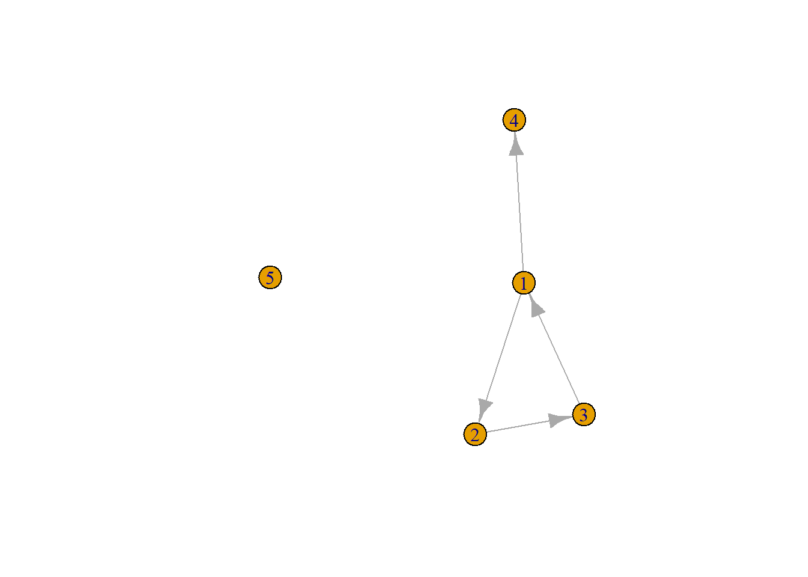
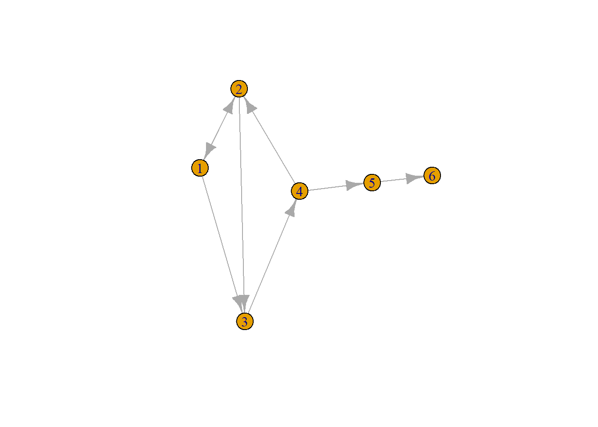
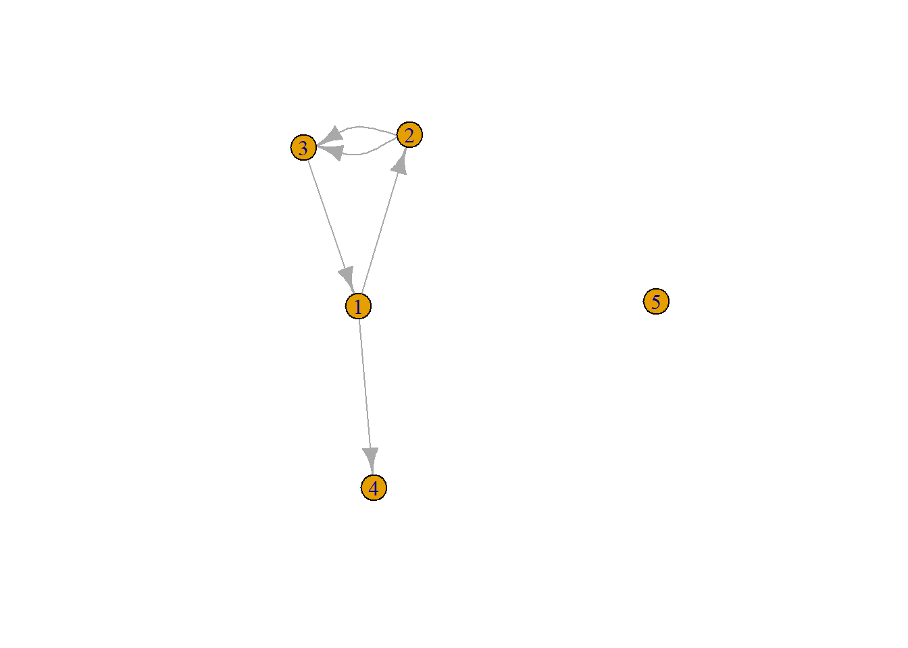
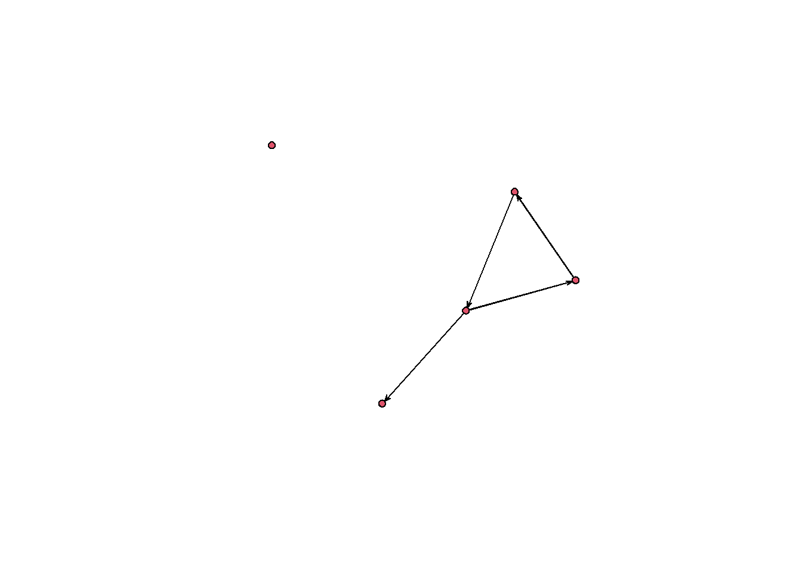
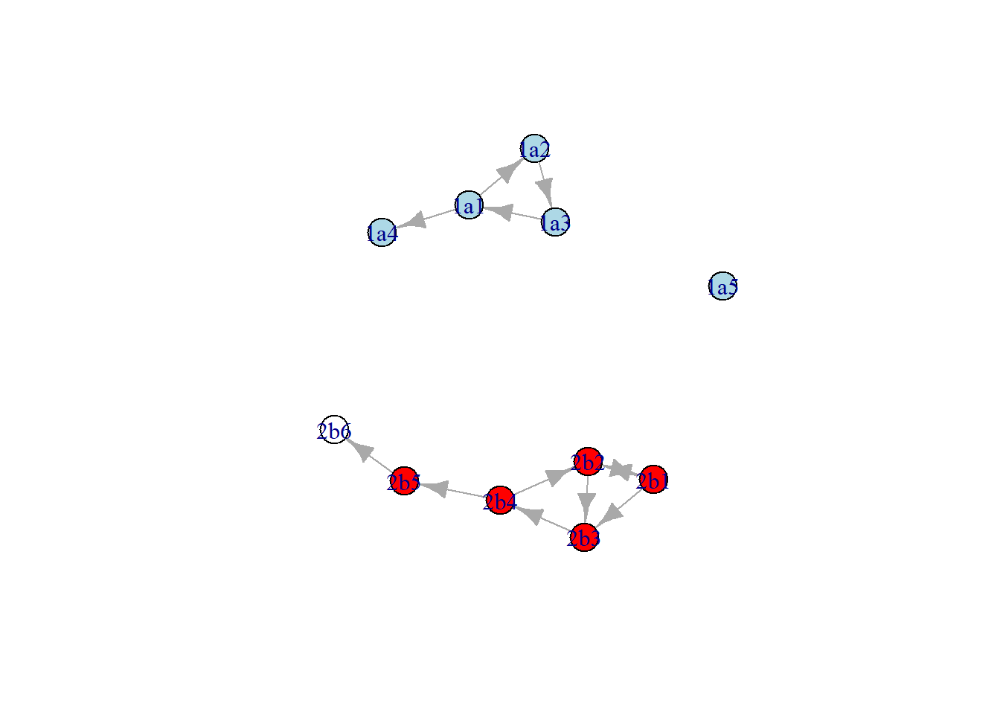
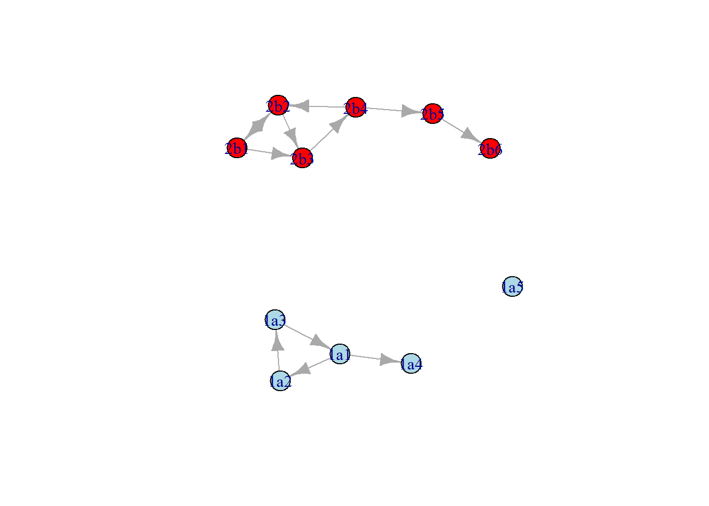

6 A deeper dive into data handling: complications in name generator data
In a previous tutorial, we’ve covered processing ‘adjacency list’ data, as typically generated by surveys with name generator questions, as network data. With real-life data, such data sets often have quirks that can create havoc in your data processing procedures if you’re not carefull. In the earlie tutorial, we already discussed one such quirk, namely the presences of isolates. In this tutorial, we cover two more challenges:
- The presence of alters who are missing as respondents (egos);
- The processing of multiple subnetworks (in our scenario: school classes) at the same time.
Let’s get started.
For practice, we use a toy dataset that was designed for looking just like the Knecht data (but smaller).
url1 <- "https://github.com/rensec/sasr08/raw/main/toy_name_generator_data.csv"
df <- read.csv(file = url1)
table(df$schoolnr)##
## 1a 2b
## 5 5## schoolnr namenr age friend1 friend2
## 1 1a 1 20 2 4
## 2 1a 2 21 3 NA
## 3 1a 3 25 1 NA
## 4 1a 4 NA NA NA
## 5 1a 5 21 NA NA
## 6 2b 1 22 2 3
## 7 2b 2 24 1 3
## 8 2b 3 NA NA 4
## 9 2b 4 21 2 5
## 10 2b 5 20 6 NA6.1 The case of the missing ego
Let’s start with importing one class, as before:
cls <- "1a"
edge_list <- df %>%
filter(schoolnr == cls) %>%
select(namenr, friend1:friend2) %>%
melt(id.vars = "namenr") %>% #make long
filter(!is.na(value)) %>% # drop the missings
rename(from ="namenr", to = "value", sourcevar= "variable") %>% #just nice for interpretation
relocate(to, .after=from) #move around the columns
edge_list## from to sourcevar
## 1 1 2 friend1
## 2 2 3 friend1
## 3 3 1 friend1
## 4 1 4 friend2nodelist <- df %>%
filter(schoolnr == cls) %>%
select(namenr,age)
g1a <- graph_from_data_frame(edge_list, vertices = nodelist)
plot(g1a)
So far, so good.
Now let’s try with the other class:
cls <- "2b"
edge_list <- df %>%
filter(schoolnr == cls) %>%
select(namenr, friend1:friend2) %>%
melt(id.vars = "namenr") %>% #make long
filter(!is.na(value)) %>% # drop the missings
rename(from ="namenr", to = "value", sourcevar= "variable") %>% #just nice for interpretation
relocate(to, .after=from) #move around the columns
edge_list## from to sourcevar
## 1 1 2 friend1
## 2 2 1 friend1
## 3 4 2 friend1
## 4 5 6 friend1
## 5 1 3 friend2
## 6 2 3 friend2
## 7 3 4 friend2
## 8 4 5 friend2nodelist <- df %>%
filter(schoolnr == cls) %>%
select(namenr,age)
g2b <- graph_from_data_frame(edge_list, vertices = nodelist) ## Error in `graph_from_data_frame()`:
## ! Some vertex names in `d` are not listed in
## `vertices`Problem: Now this leads to an error, as there is a vertex nominated as friend who is not in the data as an ‘ego’. The igraph function graph_from_data_frame() does not allow this.
QUESTION: What is a plausible data collection scenario under which this could happen?
Solution: We need to fix the node list to include this missing vertex. First let’s create a list of all the vertices that appear in the edge list:
Then, we remove duplicates:
Next, we create a node list that includes all the vertices, by combining the list of nodes from the original data set with the list of vertices from the edge list. We do this by merging the two data sets, using the merge() function.
nodelist <- df %>%
filter(schoolnr == cls) %>%
select(namenr,age, schoolnr) %>%
merge(all_vertices, by = "namenr", all.y = T, all.x = T)
nodelist## namenr age schoolnr
## 1 1 22 2b
## 2 2 24 2b
## 3 3 NA 2b
## 4 4 21 2b
## 5 5 20 2b
## 6 6 NA <NA>We now have a node list that includes all the nodes. Obviously, ‘age’ is missing for node 6 in these data, as node 6 was not included as a respondent in the data in the first place. However, ‘schoolnr’ is also missing, even if we know that node 6 was in this class too. So let’s fix that:
## namenr age schoolnr
## 1 1 22 2b
## 2 2 24 2b
## 3 3 NA 2b
## 4 4 21 2b
## 5 5 20 2b
## 6 6 NA 2b
6.2 Double mentions
Let’s look at a variation of our toy data set, called toy_data_generator_data_2.csv.
##
## 3a
## 5## schoolnr namenr age friend1 friend2
## 1 3a 1 20 2 4
## 2 3a 2 21 3 3
## 3 3a 3 25 1 NA
## 4 3a 4 NA NA NA
## 5 3a 5 21 NA NAWe create an edge list:
edge_list_3a <- df2 %>%
select(namenr, friend1:friend2) %>%
melt(id.vars = "namenr") %>% #make long
filter(!is.na(value)) %>% # drop the missings
rename(from ="namenr", to = "value", sourcevar= "variable") %>% #just nice for interpretation
relocate(to, .after=from) #move around the columns
edge_list_3a## from to sourcevar
## 1 1 2 friend1
## 2 2 3 friend1
## 3 3 1 friend1
## 4 1 4 friend2
## 5 2 3 friend2…and the nodes list:
nodelist_3a <- df2 %>%
select(namenr,age)
g3a <- graph_from_data_frame(edge_list_3a, vertices = nodelist_3a)
plot(g3a)
Now we see something strange: there are two edges from node 2 to node 3.
This even leads to problems when we try to create a network object using the network package:
## Error:
## ! `multiple` is `FALSE`, but `x` contains parallel edges.
## The following rows in `x` are duplicated:
## - `x[5, ]`The problem here is that node two nominates the same alter (node 3 in this case) twice. This should normally not happen with a name generator question; it could (in real data) be a mistake by the respondent or a mistake in data entry. It is however something to fix, in most cases. To do so, we select only the rows of the edge list that are unique on “from” and “to”.
Note: we somewhat arbitrarily keep only the first occurrence of the duplicate friend. If the information in sourcevar is meaningful, this choice may matter.
Now that the problem is fixed, we can properly import the data into a network object.

6.3 Multiple networks
Now let’s try to import the two classes into a network object at once, as if they are a single network.
edge_list <- df %>%
select(namenr, friend1:friend2) %>%
melt(id.vars = "namenr") %>% #make long
filter(!is.na(value)) %>% # drop the missings
rename(from ="namenr", to = "value", sourcevar= "variable") %>% #just nice for interpretation
relocate(to, .after=from) #move around the columns
all_vertices <- append(edge_list$from, edge_list$to) %>%
unique() %>%
as.data.frame() %>%
rename(namenr = ".")
nodelist <- df %>%
select(namenr,age, schoolnr) %>%
merge(all_vertices, by = "namenr", all.y = T, all.x = T)
g2 <- graph_from_data_frame(edge_list, vertices = nodelist) ## Error in `graph_from_data_frame()`:
## ! `vertices` contains duplicated vertex namesHouston, we’ve got a problem.
We need to be able to differentiate between the nodes from different classes, both for repondents (“egos”) and nominees (“alters”). Let’s start with the ego, which is the simplest case. We can create a unique student ID by combining the class identifier and the within-class identifier:
Now let’s start over, using this new identifier instead of ‘namenr’.
edge_list <- df %>%
select(id_pupil, schoolnr, friend1:friend2) %>%
melt(id.vars = c("id_pupil","schoolnr")) %>% #make long
filter(!is.na(value)) %>% # drop the missings
rename(from ="id_pupil", to = "value", sourcevar= "variable") %>% #just nice for interpretation
relocate(to, .after=from) #move around the columns
edge_list## from to schoolnr sourcevar
## 1 1a1 2 1a friend1
## 2 1a2 3 1a friend1
## 3 1a3 1 1a friend1
## 4 2b1 2 2b friend1
## 5 2b2 1 2b friend1
## 6 2b4 2 2b friend1
## 7 2b5 6 2b friend1
## 8 1a1 4 1a friend2
## 9 2b1 3 2b friend2
## 10 2b2 3 2b friend2
## 11 2b3 4 2b friend2
## 12 2b4 5 2b friend2Now we can also create the unique student ID for alters in the ‘to’ column of the edge list:
## from to schoolnr sourcevar
## 1 1a1 1a2 1a friend1
## 2 1a2 1a3 1a friend1
## 3 1a3 1a1 1a friend1
## 4 2b1 2b2 2b friend1
## 5 2b2 2b1 2b friend1
## 6 2b4 2b2 2b friend1
## 7 2b5 2b6 2b friend1
## 8 1a1 1a4 1a friend2
## 9 2b1 2b3 2b friend2
## 10 2b2 2b3 2b friend2
## 11 2b3 2b4 2b friend2
## 12 2b4 2b5 2b friend2The result is a neat list of within-class ties. We continue with creating the node list:
all_vertices <- append(edge_list$from, edge_list$to) %>%
unique() %>%
as.data.frame() %>%
rename(id_pupil = ".")
nodelist <- df %>%
select(id_pupil,age, schoolnr) %>%
merge(all_vertices, by = "id_pupil", all.y = T, all.x = T)g2 <- graph_from_data_frame(edge_list, vertices = nodelist)
plot(g2, vertex.color = ifelse(V(g2)$schoolnr=="1a", "lightblue", "red"))
Almost correct! The one thing to fix is that now we don’t have the schoolnr for node 2b6. The approach that we used earlier doesn’t work now (why not?), but recall that we already have schoolnr for each edge in ‘edge_list’. We use that to keep schoolnr with the list of all vertices (all_vertices) and keep it in the merge with the node list. The method for constructing all_vertices is a little different now.
all_vertices <- edge_list %>%
select(id_pupil = from, schoolnr) %>%
bind_rows(edge_list %>%
select(id_pupil = to, schoolnr)) %>%
unique() %>%
rename(schoolnr_from_edges = schoolnr)
nodelist <- df %>%
select(id_pupil,age, schoolnr) %>%
merge(all_vertices, by = "id_pupil", all.y = T, all.x = T)We now replace any NA’s in schoolnr with the value in schoolnr_from_edges. For tidiness, we remove schoolnr_from_edges as we don’t need it to be imported in our network object (of course there may be scenarios where you may want to keep it).
nodelist <- nodelist %>%
mutate(schoolnr = coalesce(schoolnr,schoolnr_from_edges)) %>%
select(-schoolnr_from_edges)
g2 <- graph_from_data_frame(edge_list, vertices = nodelist)
plot(g2, vertex.color = ifelse(V(g2)$schoolnr=="1a", "lightblue", "red"))
Done!
6.4 Dyads-as-cases
For some analyses, it can be useful to have a dataset in which the rows represent all all dyads (i.e., all pairs of nodes) in the network, with a variable (0/1) indicating whether they are connected. Conceptually, this is similar to an adjacency matrix in which each cell represents a connection between two nodes, but here, we have a row for each cell. As always, we start with loading the relevant packages.
As an example, we use a small toy data set, which contains (fictional) “name generator” data for two groups of individuals.
url1 <- "https://github.com/rensec/sasr08/raw/main/toy_name_generator_data.csv"
df <- read.csv(file = url1)
table(df$schoolnr)##
## 1a 2b
## 5 5We extract the data for one of the groups, and create a graph from it:
cls <- "1a"
edge_list <- df %>%
filter(schoolnr == cls) %>%
select(namenr, friend1:friend2) %>%
melt(id.vars = "namenr") %>% #make long
filter(!is.na(value)) %>% # drop the missings
rename(from ="namenr", to = "value", sourcevar= "variable") %>% #just nice for interpretation
relocate(to, .after=from) #move around the columns
nodelist <- df %>%
filter(schoolnr == cls) %>%
select(namenr,age)
g1a <- graph_from_data_frame(edge_list, vertices = nodelist)
plot(g1a)6.4.1 Create a dyads-as-cases dataset
From the igraph object, we can create a dyads-as-cases dataset. We start by extracting the edges from the graph, and adding a variable indicating that they are connected. Then, we create a list of all possible combinations of nodes, and match this to the list of edges. If there is no connection, we set the variable to 0.
Note the use of the igraph:: namespace to avoid a conflict with the dplyr function by the same name. Note furthermore that we first created an igraph object from the edge list, and now extract the edge list from the igraph object. We could have skipped both steps altogether and work directly from the edge list, but the igraph object is still nice to have to plot the network. Without these steps, we would not need igraph at all.
dyads <- igraph::as_data_frame(g1a, what = "edges") # start with extracting all edges from the graph object
dyads$connected <- 1 # add a variable indicating that they are connected
dyads <- dyads %>%
full_join(expand.grid(from = V(g1a)$name, to = V(g1a)$name), by = c("from", "to")) %>% # create a list of all combinations of nodes, and match this to whether they are connected
mutate(connected = ifelse(is.na(connected), 0, connected)) %>% # if there is no connection, set connected to 0
filter(from != to) %>% # remove the diagonal
select(from, to, connected) # keep only from, to and connectedWe now have a data frame with 20 rows. Verify for yourself that this is indeed the number of rows we should expect.
Note that while the “connected” variable is now a binary variable, conceptually, this could also take other values, for example values that represent the strength of the connection, or negative values.
Next, we can merge this data set with the original data, to add information about the nodes. Because the node names are extracted from the igraph object as characters, we need to convert them to numeric values first.
dyads <- dyads %>%
mutate(from = as.numeric(from), to = as.numeric(to)) %>% # convert the node names to numeric)
left_join(nodelist %>% select(namenr, age), by = c("from" = "namenr")) %>%
filter(from != to) %>% # remove the diagonal
rename(age_from = age) %>%
left_join(nodelist %>% select(namenr, age), by = c("to" = "namenr")) %>%
rename(age_to = age)With this information added, we can can also calculate further characteristics of the dyads, such as the age difference between the nodes.
ASSIGNMENT: Add a variable that contains the absolute age difference between the two nodes in the dyad.
6.4.2 Extend to multiple networks
The code above can be extended to multiple networks. We can use a function to create the dyads-as-cases dataset for each subset in df, and then apply this function to each network.
create_dyads <- function(subnet){
# Create the edgelist
dyads <- subnet %>%
select(namenr, friend1:friend2) %>%
melt(id.vars = "namenr") %>% #make long
filter(!is.na(value)) %>% # drop the missings
rename(from ="namenr", to = "value", sourcevar= "variable") %>% #just nice for interpretation
relocate(to, .after=from) #move around the columns
dyads$connected <- 1 # add a variable indicating that they are connected
# Create a list of all possible dyads
dyads <- dyads %>%
full_join(expand.grid(from = subnet$namenr, to = subnet$namenr), by = c("from", "to")) %>% # create a list of all combinations of nodes, and match this to whether they are connected
mutate(connected = ifelse(is.na(connected), 0, connected)) %>% # if there is no connection, set connected to 0
filter(from != to) %>% # remove the diagonal
select(from, to, connected) # keep only from, to and connected
# Add the group identifier
dyads$schoolnr <- unique(subnet$schoolnr)
dyads <- select(dyads, schoolnr, from, to, connected) # and move it to the front for convenience
return(dyads)
}We can now apply this function to each subset of the data frame, and then bind the results together.
dyads <- df %>%
group_split(schoolnr) %>% # Split the dataframe into a list of dataframes, one for each value of schoolnr
map(create_dyads) %>% # apply the function to each subset
list_rbind() # bind the results togetherFrom here, we can add the node information as before, matching on “from” or “to” and “schoolnr”.
ASSIGNMENT: Add a variable the variables “age_from”, “age_to”, and “age_diff” once more.
QUESTION: We now create an edge list for each subgroup (class) in the data set, process that, and add the results together. We could also try to take the entire data set at once, follow the same procedure, and create one large dyads-as-cases data set. What would go wrong if we did that (hint: there are multiple things)?